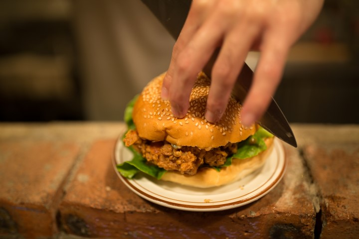
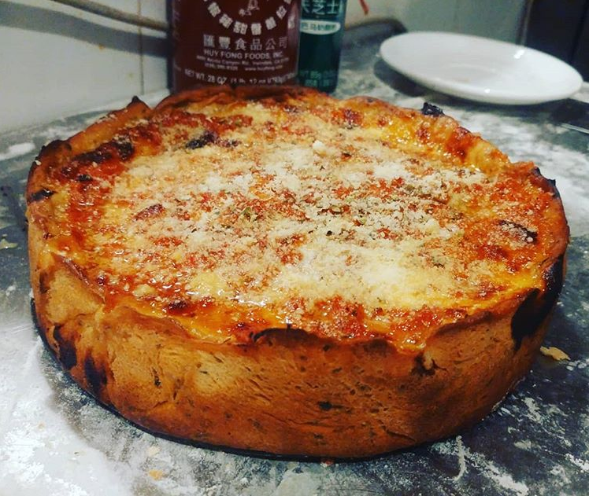
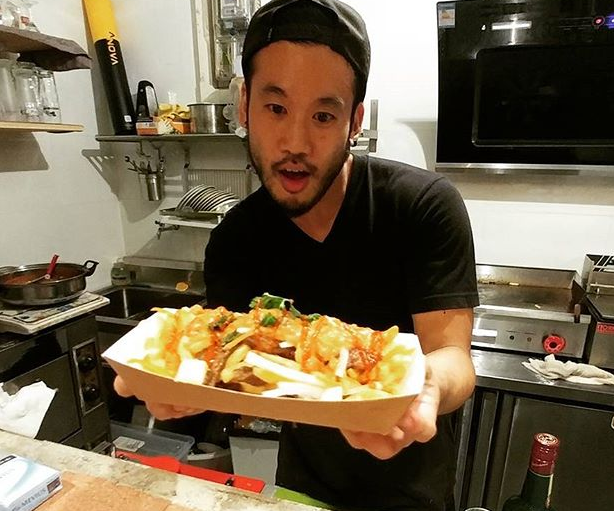

As someone that frequently changes interests and occupations, I got bored of the other stuff I was doing and signed up for class at Le Wagon. Now I cook and code. My mission: come away with new skills and become a part of a network of talented individuals.
See for yourself
Best Chicken Sandwich in the WorldCrispy, tangy, spicy and loaded with enough blue cheese to make a Frenchman cry. A thick chicken thigh is brined to tender, juicy perfection, then battered in a blend of secret peppery spices, deep fried, covered in Frank's Red Hot Sauce, and served in a fresh sesame seed burger bun. Bacon and fried egg optional. It's the best. Anyone that doesn't agree is wrong. |
 |
Chicago Deep Dish PizzaA hearty, multi-layered monstrous structure of pizza. Famous in the cold windy city of Chicago, this spicy italian sauasage and cheese filled deep dish gives the warmth needed to get through the winter. Homemade marinara sauce, crunchy corn-polenta mixed crust bring it all together. Eat with knife and fork if desired. It's ok. No judgements. |
 |
Banh Mi PoutineNights of drinking too much need food pairings. Sometimes those food pairings are wild. The Canadians swear by Poutine - meat gravy poured over cheese curds and crispy french fries. The Vietnamese swear by Banh Mi - pate, meat, pickles, and fresh cilantro. I swear by Banh Mi Poutine - a mixture of the two, because I'm drunk and you are too. You want this. |
 |